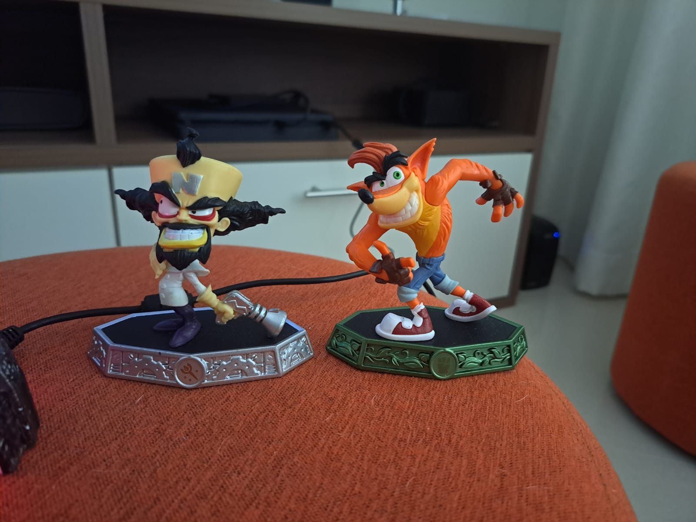

Skylanders é uma franquia de jogos lançada inicialmente em 2011 com seu primeiro jogo sendo o Skylanders Spyro Adventures, sendo um derivado da franquia de jogos Spyro, com sua principla mecânica sendo o portal e os bonecos que vinham junto com os jogo, no qual você ligava o portal ao console e colocava seus bonecos em cima dele, assim os bonecos apareciam no jogo e você conseguia jogar com eles, como mostra o vídeo abaixo.
No primeiro jogo havia apenas Skylanders básicos sem nenhuma mecânica extra, com cada um tendo 3 ataques e um elemento, tendo um total de 10 elementos, sendo que até o Skyalnders Trap Team era 8 coisa que acabou mudando no jogos posteriores da frânquia, então vamos explorar essas mecânicas?
Skylanders Giant
O segundo jogo da frânquia trouxe os Skylanders giants, que deram o nome ao jogo, sendo maiores com mais vida mas mais lerdos que os normais, além de poderem realizar enterações especiais em seu jogo, como abrir baús específicos.

Boneco Giant comparado ao um normal

Além disso os Giants tem partes que brilham quando são colocados no portal
-
Gameplay de um Skylander padrão(esquerda) e de um Giant(direita)
O terceiro jogo trouxe os Swap Forces como mecânica principal, sendo um dos tipos de bonecos que mais se diferencia dos outros, pois enquanto os Giants eram apenas Skylanders padrões só que maiores, os Swap Force podiam trocar as suas partes de cima com a parte de baixo de outro Swap Force, assim misturando suas habilidades e tipos.
Gameplay de dois Swap Forces separados
Swap Forces fundidos
Trap Team
O Skylanders Trap Team trouxe 2 mecânicas novas sendo ela os Trap Masters e as armadilhas, então vamos vê-las.
Trap Masters:
São os Skylanders especiais deste jogo possuindo armas de Traptanium que permitem quebrar cristai específicos ao longo das fases, além de darem mais dano nos chefes.
Armadilhas:
Servem para capturar os chefões que são derrotados ao longo do jogo e jogar com eles. Com eles falando pelo portal com o jogador ao longo da gameplay, sendo que apenas um vilão pode ficar na armadilha.
Ao longo das fases também existe npcs com missões que pedem um vilão específico, e quando você as completa esses vilões evoluem
SuperChagers:
A mecânica principal do Skylanders SuperChagers é os veículos, que podem ser aéreos, aquáticos e terrestres. Com os dois primeiros sã usados mais em fases bônus durante o jogo, com apenas os terrestres sendo necessários para zerar o jogo, já que é um deles que veem no kit base do jogo. Cada Skylander possui seu veículo, e quando usados juntos o veículo muda de forma e ganha um buff. Como eu acabei perdendo o meu irei usar um vídeo feito pela propria empresa responsável pelo jogo.
Imaginators:
Esse jogo também possui duas mecânicas únicas sendo elas:
Senseis:
Sendo os Skylanders básicos desse jogo cada um possui uma classe, como pugilista, feiticeiro, etc., além dos elementos básicos de todos os Skylanders. Com os Senseis possuindo um ataque especial, que é desbloqueado ao interagir com um santuário da classe do Slkylander que é encontrado nas fases, sendo alguns bonecos novos e outros deles sendo vilões capturaveis no Trap Team, como o Chompy Mage, com o meus endo um versão natalina dele, e o proprío Kaos, vilão principal de todos os jogos, como ele possuindo um elemento e classe proprio.

Imaginite:
A mecânica principal, sendo uma forma de você criar e personalizar seu proprio boneco, com o elemento sendo determinado pelo cristal, que é o que você bota no portal para jogar com ele, e a classe sendo escolhida após você colocar o cristal no portal pela primeira vez, e não podendo ser trocada. A classe decide duas habilidades do Imaginator, nome do boneco criado, e elemento o último. Ao longo do jogo você acha baús que vem com partes para personalizar seu boneco, além de acessórios que melhoram seus atributos, os Senseis também liberam acessórios para seus Imaginatrors, normalmente armas para a sua classe, além que a cada Sensei que você tiver mais nível seus Imaginators poderam ter.